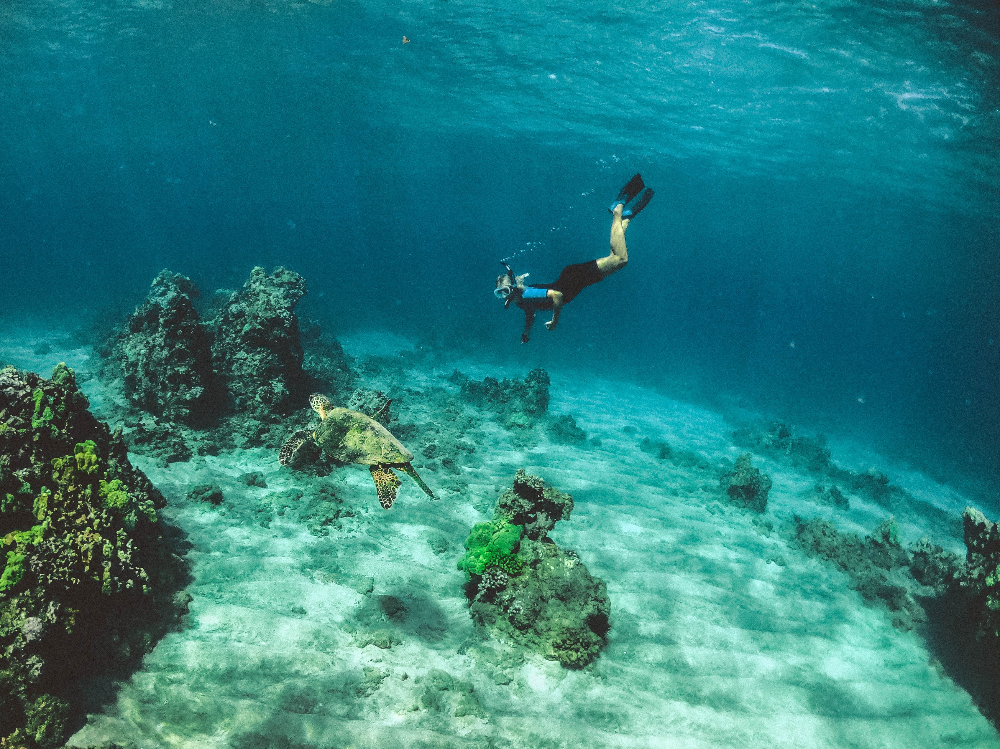

Hiking
My family and I often go hiking in the mountains surrounding LA. Some of my favorite places I have gone hiking have been in the redwood forest in northern California and the deserts of Utah.

Fishing
While I have only gone fishing a hand full of times, each time I've gone I have really enjoyed it. I love waking up early and getting on a small boat in the middle of a quiet lake, waiting for a fish to bite.

Star Gazing
Like many other kids, I have always had a fascination with space and always enjoy looking up at the night sky when given the a cloudless and clear night. Some of the best and most existential conversations I have had with people come from looking up at the starry skies.

Jet Skiing
I love just about any activity to due with water, but my favorite has got to be jet skiing. Some of the most beautiful places I have jet skied include Puerto Rico, Hawaii, and Corsica.
Snorking
I have always been interested in marine biology and snorking gives me the opportunity to see some of these organisms up close. One day I wish to learn how to scuba dive and go cage diving with sharks, my favorite type of animals.
